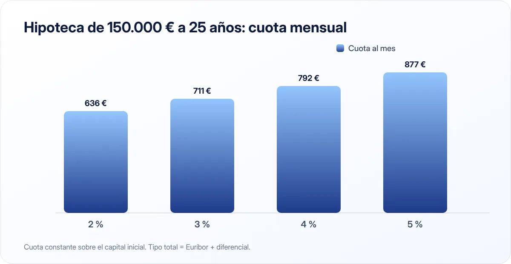

Qué es el Euríbor y cómo afecta a tu hipoteca
Si tienes o vas a firmar una hipoteca variable, el Euríbor decide cuánto pagas cada mes. Entenderlo te ayuda a anticiparte a las subidas y bajadas.

Puntos clave
- El Euríbor es el tipo de interés al que los bancos europeos se prestan dinero entre sí.
- En una hipoteca variable, tu tipo es Euríbor + diferencial, y se revisa normalmente cada 6 o 12 meses.
- Si sube, puedes amortizar, negociar o cambiar a tipo fijo.
Qué es el Euríbor
Euríbor significa Euro Interbank Offered Rate: es el tipo de interés medio al que un grupo de grandes bancos europeos se prestan dinero entre sí. Hay Euríbor a distintos plazos, pero el que se usa en la inmensa mayoría de hipotecas en España es el Euríbor a 12 meses.
Su valor depende sobre todo de la política del Banco Central Europeo: cuando el BCE sube sus tipos oficiales para frenar la inflación, el Euríbor tiende a subir; cuando los baja, el Euríbor suele bajar.
El Banco de España publica cada mes el valor oficial del Euríbor que se usa como referencia en las hipotecas.
Cómo se calcula tu cuota
En una hipoteca variable, tu tipo de interés es:
Euríbor + diferencial
El diferencial es fijo y lo pacta el banco contigo al firmar (por ejemplo, 0,75 %). El Euríbor cambia.
Ejemplo: si el Euríbor está en el 2,5 % y tu diferencial es del 0,75 %, pagarás un 3,25 % hasta la siguiente revisión.
Cada cuánto se revisa
Normalmente cada 6 o cada 12 meses, según tu contrato. En cada revisión, el banco toma el valor del Euríbor de un mes concreto (habitualmente uno o dos meses antes de la fecha de revisión) y recalcula tu cuota para el siguiente periodo.
Cuánto cambia la cuota

Sobre una hipoteca de 150.000 € a 25 años, la cuota mensual aproximada según el tipo total sería:
| Tipo total (Euríbor + diferencial) | Cuota mensual aproximada |
|---|---|
| 2,00 % | 636 € |
| 3,00 % | 711 € |
| 4,00 % | 792 € |
| 5,00 % | 877 € |
Cálculo con sistema francés de cuota constante sobre el capital inicial. En la práctica, la revisión se aplica sobre el capital pendiente y los años que quedan.
Un punto de diferencia en el tipo puede suponer unos 75–85 € al mes en este ejemplo, casi 1.000 € al año.
Fija, variable o mixta
- Variable: te beneficias si el Euríbor baja y te perjudica si sube.
- Fija: la cuota no cambia nunca. Pagas por la tranquilidad, y suele tener un tipo inicial más alto que la variable.
- Mixta: tipo fijo los primeros años y variable después.
Ninguna es siempre mejor. Depende de tu tolerancia al riesgo, de tus ingresos y de los tipos que ofrezca el mercado cuando firmes. Lee más en alquilar o comprar vivienda.
Calcula siempre tu cuota con un Euríbor más alto que el actual. Si podrías pagarla sin agobios, estarás preparado para las subidas.
Qué hacer si el Euríbor sube
- Revisa tu presupuesto para absorber la subida en la próxima revisión.
- Valora amortizar anticipadamente si tienes ahorros más allá de tu fondo de emergencia. Puedes reducir cuota o plazo; revisa la comisión por amortización anticipada.
- Negocia con tu banco una mejora del diferencial o el paso a tipo fijo.
- Compara con otros bancos la subrogación (llevarte la hipoteca a otra entidad) o la novación.
- Si tienes dificultades serias, pregunta por las medidas de protección para deudores hipotecarios vigentes en cada momento.
En resumen
El Euríbor es la referencia que mueve tu cuota si tienes hipoteca variable. Conócelo, revisa tu contrato para saber cuándo se actualiza y deja margen en tu presupuesto para las subidas.
Fuentes consultadas
Este artículo es informativo y no constituye asesoramiento financiero, fiscal ni jurídico personalizado. Las cifras son orientativas y pueden cambiar; consulta las fuentes oficiales y, si lo necesitas, a un profesional. Cómo elaboramos nuestras guías.